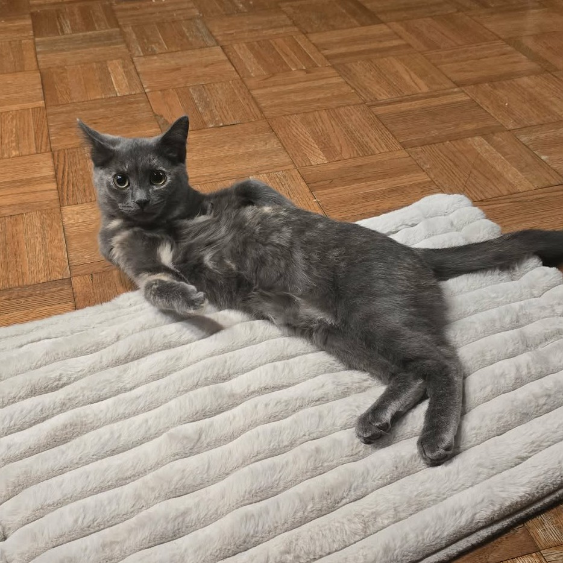

I am taking this course to get a better understanding of the software side of electronics and also to meet the full time credit hour requirment to be a full time student.
I am a sales associate at The Home Depot. I primarily work in the electrical department, where I assist customers in finding what they need to complete their projects. I am also a new associate coach and help new hires get acclimated to the department.
I have way too many hobbies to list, but if I had to pick my favorite it would be 3D printing.
I adopted a kitten in October, her name is Momo.
